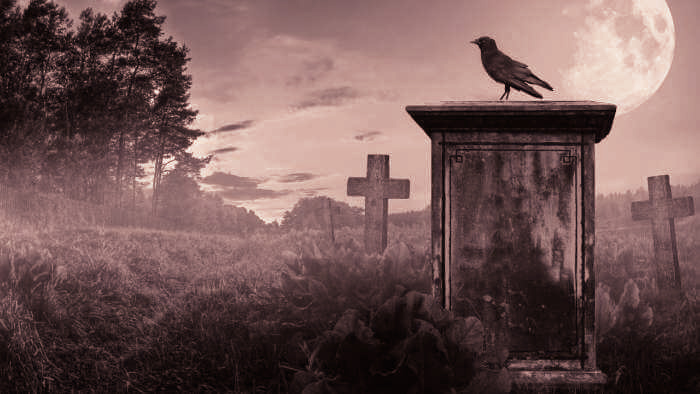
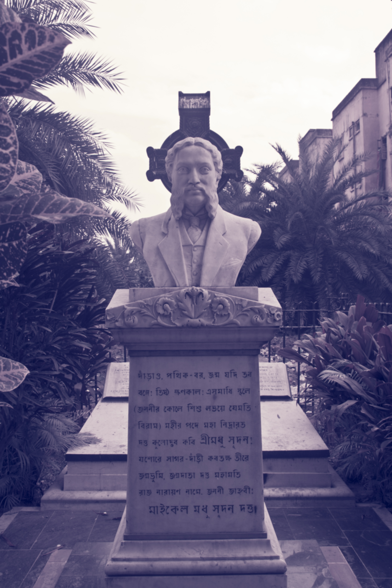

The Lower Circular Road Cemetery is an old Christian cemetery which has been around since 1840. Stories of haunting have long plagued this cemetery however these urban legends also add to its appeal.
The cemetery is said to be haunted by the ghost of Sir William Hay MacNaghten; a British civil servant who met his unfortunate end in the Anglo-Afghan War and was laid to rest here.
Sir William Hay MacNaghte, a civil servant in the British Era, was brutally killed during the first Anglo-Afghan war. His wife found his body cut into tiny pieces. He was buried in the Lower Circular Road Cemetery.

The story of Sir WH MacNaghten whose body was cut up in Afghanistan. His wife collected his remains, carried it back to Calcutta and he was buried at the Lower Circular Road Cemetery. The tree above his grave shakes each time someone narrates his story.
People who narrate Sir William Hay MacNaghte’s haunting story near Lower Circular Road Cemetery reportedly felt the tree above the grave start shivering.
Several paranormal occurrences have been reported in Lower Circular Road Cemetery. People have reported hearing noises in the cemetery and around it in the night time.
THE END
Thanks,
Feel The Fear